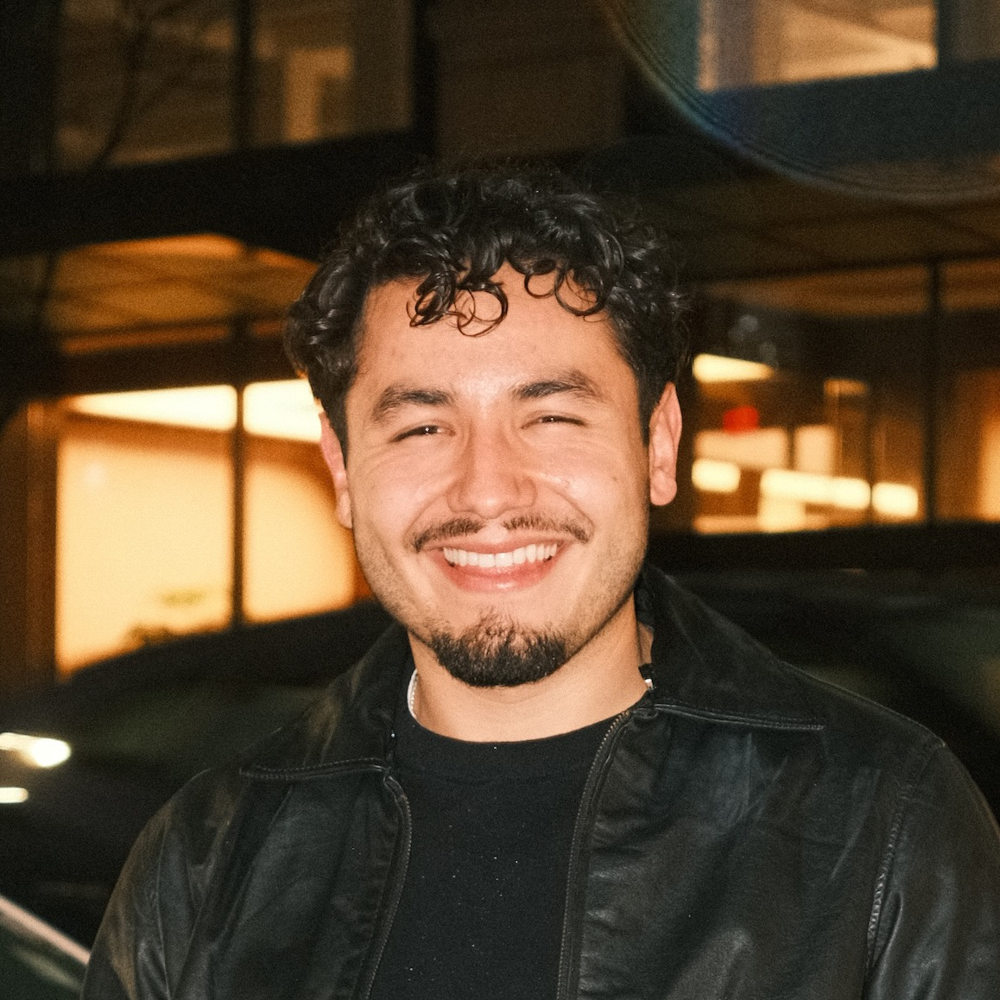

Nickholas Gutierrez
About
I'm a researcher in quantum information at Harvard, working at the intersection of quantum machine learning, many-body physics, and next-generation compute. My work focuses on how computation and learning emerge from physical systems—particularly in architectures like neutral atom arrays—where constraints such as connectivity, noise, and control fundamentally shape what is possible. I'm especially interested in "physics-to-systems" approaches to computing: understanding how hardware dynamics give rise to new computational primitives, and how unconventional platforms (quantum, analog, and hybrid) can push beyond the limits of classical compute.
More broadly, I think about compute as a continuum from device physics to algorithms, and I'm motivated by bridging that gap, whether through research, building systems, or translating technical ideas for broader impact.
Outside of work, I enjoy bringing people together—whether that's hosting dinners or organizing events. I'm also drawn to music, film, history, and books.
Projects
- Project One A short description
- Project Two Another short description
- Project Three One more description